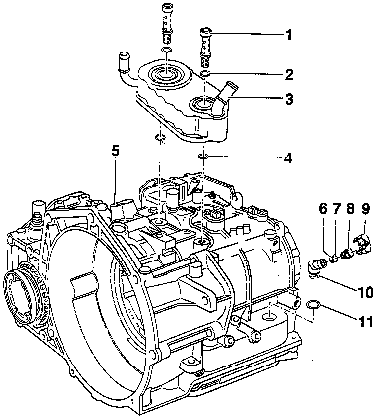

Fill Plug: Service and Repair

COMPONENT NOTES AND INFORMATION
1 Banjo bolt
- Tighten to: 35 Nm (26 ft lb)
2 O-ring
- Always replace
3 ATF cooler
4 O-ring
- Always replace
5 Transmission housing
6 Seal
- Always replace
7 Seal
- Always replace
8 Plug
- Tighten to: 15 Nm (11 ft lb)
9 Cap
- To secure the level plug after checking ATF level, refer to Topping Up Transmission Oil. Service and Repair
- Always replace
10 ATF filler tube
11 O-ring
- Always replace